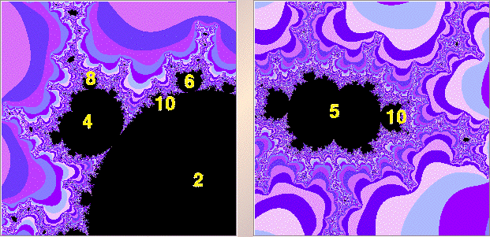

|  |
| The yellow numbers assemble the cycle data gathered so far. |
| These few calculations are consistent with the multiplier rule and with the Farey sequence for the quadratic Mandelbrot set. |
| Exercise Continue these explorations. Catalog the similarities and differences between the combinatorics of this cubic Mandelbrot set and those of the quadratic Mandelbrot set. |
Return to Samples.